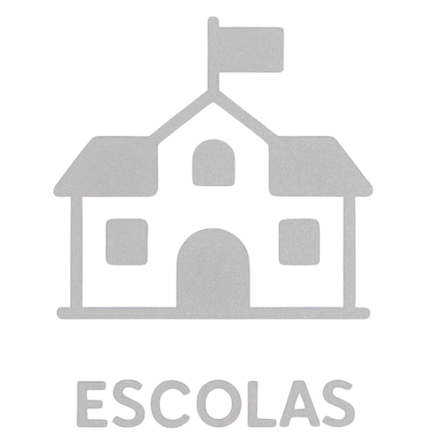

A água é um recurso natural vital para a existência. Contudo, sua importância muitas vezes só é reconhecida quando há falta dela. A conscientização ambiental se apresenta como uma das ferramentas mais eficazes para assegurar que esse recurso seja tratado com cuidado, consideração e responsabilidade. A conscientização ambiental altera mentalidades, incentiva transformações comportamentais e reforça o compromisso da comunidade em manter a natureza.
Ajuda a mudar hábitos e evitar desperdícios.
Educação ensina o uso responsável da água.
Ação local faz diferença.
Conforme os dados da Organização Mundial da Saúde e do Fundo das Nações Unidas para a Infância (2023), aproximadamente 2,2 bilhões de indivíduos ainda não têm acesso a serviços de água potável que sejam adequadamente gerenciados. A falta de água não é uma situação restrita a áreas secas ou nações em desenvolvimento; é uma ameaça em nível global.
Dentro desse panorama, a educação ambiental assume uma função essencial. Ao facilitar a compreensão sobre os ciclos naturais da água, os efeitos da poluição e as repercussões do uso excessivo, ela capacita indivíduos a se tornarem mais conscientes e a tomarem decisões responsáveis em suas vidas cotidianas e profissionais.
A sensibilização em massa é fundamental para qualquer mudança duradoura. Quando as pessoas percebem que suas práticas diárias, seja o tempo que passam no chuveiro, como descartam o lixo ou utilizam produtos químicos, impactam diretamente rios e lagos, elas começam a agir de forma mais intencional. O aprendizado provoca empatia, que, por sua vez, resulta em transformação.
Incorporar a sensibilização ambiental nos programas educacionais vai além de simplesmente lecionar ciências: é semear um apreço pelo meio ambiente desde a infância. Crianças e adolescentes que se familiarizam com os ciclos hídricos, as dificuldades do abastecimento nas cidades e as consequências da poluição tornam-se cidadãos mais responsáveis em seus lares e comunidades.
Iniciativas como o Plano Nacional de Educação Ambiental (PNEA), estabelecido no Brasil pela Lei nº 9.795/1999, enfatizam a necessidade de incluir a educação ambiental de maneira contínua nas etapas de ensino fundamental e superior. Instituições de ensino, tanto públicas quanto privadas, ONGs, universidades e centros de pesquisa estão envolvidas em projetos que variam desde a criação de hortas ecológicas até ações voltadas para a recuperação de nascentes e visitas a instalações de tratamento de água.
Além do ambiente educacional, as campanhas públicas têm um papel significativo. Projetos como o “Cada Gota Conta”, promovido pelo Ministério do Meio Ambiente, ou os programas educativos oferecidos por empresas de saneamento, como a SABESP, utilizam uma comunicação simples e acessível para interagir com a população, ressaltando que a preservação dos recursos hídricos depende de pequenas e conscientes ações do dia a dia.
A verdadeira mudança ambiental se concretiza quando a educação se transforma de um papel meramente informativo para um agente que molda práticas. Isso ocorre quando as comunidades percebem que fazem parte das soluções. Essa dinâmica é visível em várias iniciativas comunitárias que incluem ações coletivas para limpeza de rios, plantio de árvores em áreas de preservação e projetos de coleta seletiva voltados para a conservação da água.
A envolvimento da comunidade é fundamental para o êxito de qualquer estratégia de gestão de recursos hídricos. Municípios que priorizam a educação ambiental conseguem minimizar o desperdício de água, otimizar o uso em instituições como escolas, hospitais e comércios, além de impactar de forma positiva o comportamento de empresas e indústrias. O resultado disso é um ciclo positivo, onde a cidadania ativa promove um maior cuidado coletivo com os recursos naturais.
Ensinar sobre a preservação da água é ensinar sobre a existência. Esse aprendizado nos leva a refletir sobre nossos costumes, entender as interações entre o meio ambiente e a comunidade, e aceitar, tanto individualmente quanto em grupo, o dever de cuidar do futuro do mundo.
Diante da crise climática e da falta de água, educar sobre esse recurso se torna prioritário. Além disso, também representa uma chance de criar um planeta que seja mais justo, harmonioso e sustentável para todos.